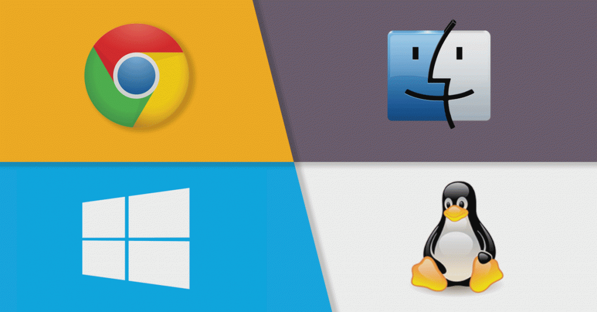
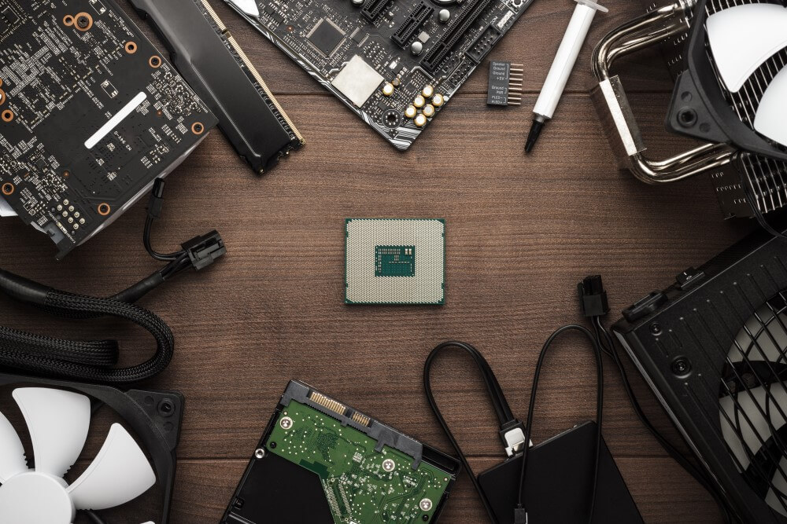

Bem-vindo ao nosso site sobre os fundamentos da informática! Se você é novo no mundo da computação ou deseja aprimorar seus conhecimentos sobre tecnologia da informação, este é o lugar certo para você. Aqui, você encontrará informações valiosas sobre os conceitos básicos da computação e da tecnologia da informação, incluindo hardware, software, redes, segurança digital, programação, entre outros.
Nosso objetivo é fornecer um guia prático e fácil de entender para aqueles que desejam aprender sobre a informática, desde os fundamentos até os conceitos mais avançados. Você aprenderá sobre como os computadores funcionam, quais componentes os compõem e como eles interagem entre si para executar tarefas complexas. Além disso, descobrirá o que é o software, como ele funciona e como você pode usá-lo para executar tarefas específicas.
Falando em software, você aprenderá como os programas são criados, desde o processo de desenvolvimento até o processo de teste e implantação. Também abordaremos conceitos avançados, como inteligência artificial, aprendizado de máquina e análise de dados, que são fundamentais na era digital em que vivemos.
Além disso, falaremos sobre redes, como elas funcionam e como você pode configurar uma para sua casa ou empresa. Abordaremos temas como segurança digital, que inclui como se proteger contra malware, phishing e outros ataques cibernéticos.
Por fim, aqui você encontrará recursos úteis, como tutoriais, vídeos e artigos, que o ajudarão a entender melhor a informática e como ela pode transformar o mundo ao nosso redor. Esperamos que este site seja um recurso valioso para você e que você aproveite ao máximo tudo o que temos a oferecer. Bem-vindo ao mundo dos fundamentos da informática!
Antes de começar, é interessante lembrar que o computador não foi criado por uma única pessoa ou em um único momento. Na verdade, a história do computador é uma evolução gradual ao longo de muitos anos, com várias pessoas contribuindo com ideias e inovações que levaram ao computador moderno que usamos hoje.
Vamos começar pelo começo: a primeira máquina de calcular mecânica foi inventada em 1642 pelo matemático francês Blaise Pascal. A "Pascalina", como ficou conhecida, era uma máquina que utilizava engrenagens e rodas para realizar operações matemáticas básicas.
Mas a verdadeira revolução na história do computador veio em meados do século XIX, com o matemático britânico Charles Babbage. Babbage idealizou a "Máquina Analítica", que seria capaz de executar cálculos complexos por meio de cartões perfurados. Infelizmente, a máquina nunca foi construída em vida de Babbage, mas suas ideias foram fundamentais para o desenvolvimento do computador moderno.
Com o avanço da eletricidade e dos circuitos eletrônicos, o computador moderno começou a tomar forma. Em 1937, o matemático norte-americano John Atanasoff criou o primeiro computador eletrônico, o Atanasoff-Berry Computer (ABC). Embora o ABC nunca tenha sido totalmente funcional, ele abriu caminho para os computadores eletrônicos que viriam a seguir.
Durante a Segunda Guerra Mundial, os computadores foram usados para fins militares, como criptografia e cálculos de trajetória de mísseis. Em 1946, o primeiro computador eletrônico de grande escala, o ENIAC (Electronic Numerical Integrator and Computer), foi construído nos Estados Unidos. O ENIAC era capaz de executar cálculos em velocidades muito mais rápidas do que os computadores anteriores, e foi um marco importante na história do computador.
Desde então, os computadores evoluíram rapidamente, tornando-se cada vez menores, mais poderosos e mais acessíveis. Hoje, temos computadores de mesa, laptops, tablets e smartphones que são usados por bilhões de pessoas em todo o mundo.
E isso é apenas o começo! A história do computador continua a se desenvolver, com inovações como inteligência artificial, computação em nuvem e blockchain, apenas para citar algumas. É emocionante pensar em todas as possibilidades futuras que a tecnologia nos reserva.
|  |
Software:Uma das coisas mais importantes em qualquer sistema de computador é o software, que é um conjunto de instruções ou programas que permitem que o computador realize tarefas específicas. Existem dois tipos principais de software: o software de sistema, que gerencia o hardware do computador e fornece serviços para os aplicativos; e o software de aplicativo, que é projetado para realizar tarefas específicas, como edição de texto, edição de imagens ou navegação na web. O software é essencial para o funcionamento adequado de qualquer sistema de computador e é a base para muitas das ferramentas que usamos no dia a dia. Se você deseja saber mais sobre o mundo da tecnologia da informação, continue navegando em nosso site! |
|  |
Hardware:Um Hardware refere-se a todos os componentes físicos de um computador ou dispositivo eletrônico, incluindo a placa-mãe, processador, memória RAM, disco rígido ou SSD, placa de vídeo, placa de som, monitor, teclado, mouse e outros dispositivos de entrada e saída. O hardware é responsável pelo funcionamento e desempenho do dispositivo e é diferente do software, que se refere aos programas e aplicativos que executam no dispositivo. |
Redes:ma rede é um conjunto de dispositivos interconectados que podem compartilhar recursos, como arquivos, impressoras, conexão à Internet e informações. As redes podem ser cabeadas ou sem fio e podem ser configuradas em diferentes topologias, como estrela, anel ou malha. As redes são amplamente utilizadas em ambientes empresariais e residenciais para permitir a comunicação e colaboração entre usuários e dispositivos, além de facilitar o acesso a recursos compartilhados. As redes também podem ser configuradas com medidas de segurança para proteger informações sensíveis e prevenir acessos não autorizados. |
Segurança Digital:Segurança digital é o conjunto de medidas e práticas utilizadas para proteger dispositivos, sistemas e dados digitais contra ameaças, como ataques cibernéticos, vírus, malware, phishing, entre outros. Essas medidas incluem o uso de senhas fortes, criptografia, atualizações regulares de software, backups, firewalls e antivírus. A segurança digital é essencial para proteger informações pessoais e empresariais, garantir a privacidade e evitar prejuízos financeiros e de reputação. As ameaças cibernéticas estão em constante evolução, o que torna importante manter-se atualizado sobre as melhores práticas de segurança e estar sempre vigilante contra possíveis ataques. |
|
|
Programação:Programação é o processo de criar instruções para computadores executarem tarefas específicas. É a linguagem utilizada para desenvolver software, aplicativos, sites e outras soluções tecnológicas. A programação envolve a escrita de códigos em linguagens específicas, como Java, Python, C++, JavaScript, entre outras. Os programadores utilizam algoritmos e estruturas de dados para criar soluções computacionais que atendam às necessidades dos usuários. A programação é uma habilidade essencial em muitas áreas, incluindo engenharia, ciência de dados, desenvolvimento web e móvel, inteligência artificial, entre outras. |
Falar sobre o futuro na computação é sempre emocionante, já que essa área está em constante evolução e há muitas possibilidades e tendências que podem surgir nos próximos anos.
Uma das principais tendências na computação é a inteligência artificial (IA). A IA já está sendo usada em várias áreas, desde assistentes virtuais até diagnósticos médicos e análise de dados. No futuro, a IA pode se tornar ainda mais avançada, capaz de aprender de forma autônoma e tomar decisões complexas em tempo real.
Outra tendência é a computação quântica. Os computadores quânticos usam a mecânica quântica para realizar cálculos muito mais rapidamente do que os computadores tradicionais. Embora a computação quântica ainda esteja em estágios iniciais, ela tem o potencial de transformar a computação como a conhecemos atualmente.
A computação em nuvem também deve continuar a evoluir no futuro. A computação em nuvem permite que os usuários acessem dados e aplicativos pela internet, sem a necessidade de armazenar informações localmente. Com a crescente quantidade de dados que precisamos armazenar e acessar, a computação em nuvem deve se tornar ainda mais essencial no futuro.
Além disso, a realidade aumentada (RA) e a realidade virtual (RV) têm o potencial de mudar a forma como interagimos com a tecnologia. A RA e a RV já são usadas em jogos e aplicativos de entretenimento, mas no futuro, elas podem ser usadas em áreas como educação, treinamento e até mesmo em cirurgias médicas.
Por fim, a segurança cibernética será cada vez mais importante no futuro. Com a crescente quantidade de dados que armazenamos e compartilhamos online, é essencial que esses dados sejam protegidos contra ameaças como hackers e ataques cibernéticos.
Essas são apenas algumas das tendências que podemos esperar no futuro na computação. À medida que a tecnologia evolui, novas possibilidades surgirão e poderemos ver mudanças ainda mais significativas na forma como usamos a tecnologia em nossas vidas cotidianas. O futuro na computação é emocionante e promissor, e mal podemos esperar para ver o que está por vir!